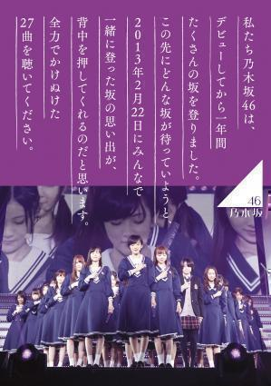
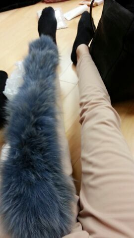

おはよお.* ろってぃ- です !
まいやん ろってぃー 川後 さゆりん みさ
日曜の夜 乃木坂って、どこ？
金曜の夜 NOGIBINGO!2(叩いて被ってジャンケンポン♪)見ましたかあ(*^.^*)？あは
乃木どこ も MOGIBINGO!2も次回のオンエアが楽しみです.*
ひめたんさんの前髪の*天使の輪*。
あと、乃木坂46が初めて出す
2013年 2月22日の幕張メッセでのライブDVDが
発売されています !!!
お店に行くと 置いてあるはずなので
皆さん是非 、GETしてくださいねえ\(。・ω・。)/
私もこの前 仕事の合間にCDショップへ行ったら
乃木坂46のコーナーが大きく作られており
びっくりしました( ; ゜゜)
嬉しゅうキモチや〜ありがたい。
ほらっ ちゃんと ろってぃーも写ってるよ♪
生駒ちゃんの隣りに。

最後にやねんけど... これどう？

人間の脚に こんなフワフワの毛が生えてきたら
気持ちくてしゃあないなぁ〜\(*´ー｀\*)
かずみんがいつも首に巻いてるやつ
床に置いてあったから 脚に乗っけてみた。
明日の晩っ、 必ず blog更新致します！
ちなみに はいっ、横浜アリーナliveの準備も
次に出す ８枚目シングルの準備も順調です！
最後まで 頑張ります(。・ω・。)ゞ
のし♪ Rotty.*